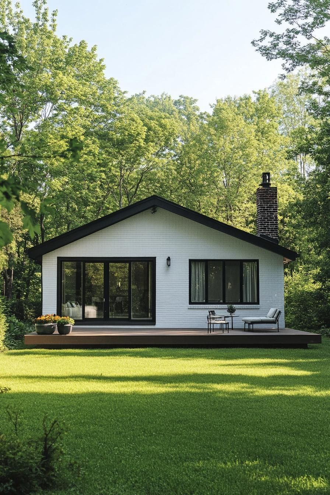

Свет как материал. Мы лепим пространство не стенами, а тем, как в него проникает солнце.


Мы убираем несущественное, чтобы обнажить фундаментальное. Наши дома — это не просто убежища, это инструменты для восприятия мира: рамы для света, природы и тишины. Мы проектируем пространство, где разум отдыхает.
Элементы восприятия.
Свет как материал. Мы лепим пространство не стенами, а тем, как в него проникает солнце.

Тактильность. Честность материалов. Никакой имитации. Камень, дерево, бетон и стекло в их первозданной красоте. Бескомпромиссное качество исполнения.
PROJECT 01
Дом, растворяющий границу между океаном и жилищем.

Проектирование — это процесс бесконечного вопрошания. Мы не добавляем, мы отсекаем. Каждая линия должна быть оправдана функцией или смыслом.
Мы работаем медленно. Мы берем ограниченное количество проектов в год, чтобы гарантировать бескомпромиссное внимание к каждой детали, от фундамента до дверной ручки.